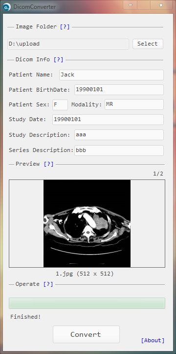

简介
医学领域专用工具，千金难求，可以批量把jpg、png、bmp、tif图片转换为dicom(dcm)格式，并且保持原有顺序，同时支持嵌入部分重要的dicom元数据，比如：病人姓名，病人生日等。
将需要转换的图片全部放入同一个文件夹中，如果文件排序不是默认的按名称排序，那么需要设置成按名称，因为这个顺序就是dicom instance的顺序，为了确保顺序无误，可以通过应用中的预览功能进行检查，最后点击转换按钮进行转换。

使用说明
· 图片顺序对于dicom至关重要，因此本应用自身不提供排序功能，而是利用windows自带的资源管理器中的顺序，如果需要调整，直接在资源管理器中重命名即可(图片文件名称不能包含中文)，同时本应用不扫描子目录，避免混乱。
· 可以填写一些dicom关键信息，如果不填，则为默认值，一般为UNKNOWN。
· 预览功能会显示图片总数量、当前图片序号、图片名称等信息，将鼠标移入预览框内，通过滚轮上下滚动即可切换图片。
· 转换过程会显示进度，以及当前处理中的图片名称。
· 转换完成后，图片所在的文件夹中(选择的文件夹下)会生成一个名为DicomConverter的文件夹，后缀为dcm的dicom文件将保存到该目录中。
注意事项
程序运行依赖.NET Framework 4.5.2。
win7、win10测试通过，xp未测试。
使用过程中发现任何问题或建议可以在本文留言反馈，作者会持续迭代。